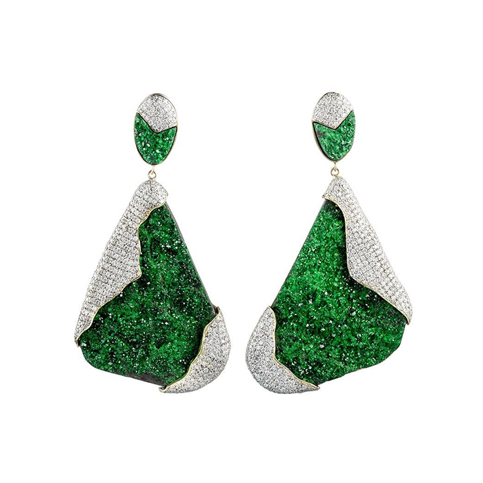

Birthstones
January - April
- 
石榴石 Garnet
一月生日石-石榴石的英文名稱為「Garnet」，由拉丁文「Granatum」演變而來，意思是「像種子一樣」。
概因其晶體與紅石榴籽的形狀、顏色十分相似，故名之。傳説中諾亞方舟上正是使用石榴石來照明;
石榴石常被引喩具忠誠、真實及堅貞之意。
紫水晶 Amethyst
二月出生的人據說富有藝術天份與想像力，稱得上是浪漫的生活家。二月生日石紫水晶的民間說法是可䦕智慧，相傳佩帶紫水晶喝酒不會醉，且可帶來運氣；打仗時更能英勇殺敵，凱旋而歸。

海水藍寶 Aquamarine
海水藍寶以它獨特的海水藍顏色而得名。東方或西方都視水為生命之源，三月正是地球上一切動植物開始活躍之時，所以海藍寶石就被定為三月的誕生石，象徵著沉著、勇敢和聰明。
鑽石 Diamond
鑽石英文名源於希臘文，意思是「不可征服」，化學和工業中稱為金剛石。鑽石是碳元素組成的晶體，硬度10，為目前已知自然存在最硬物質；鑽石折射率高，燈光下閃閃生輝，所以幾世紀以來，璀璨的鑽石一直是女性的最愛而被用作定情信物，見證無數的天長地久。